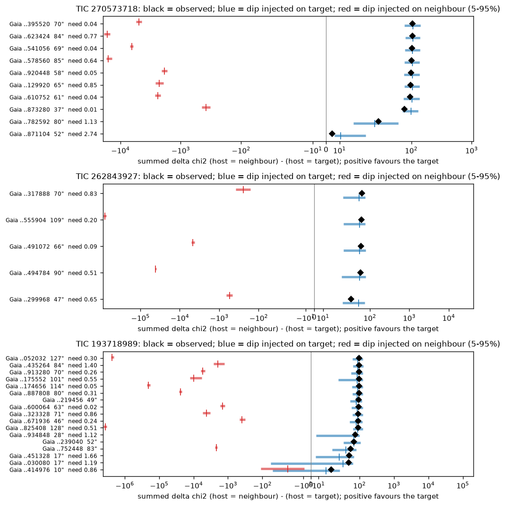
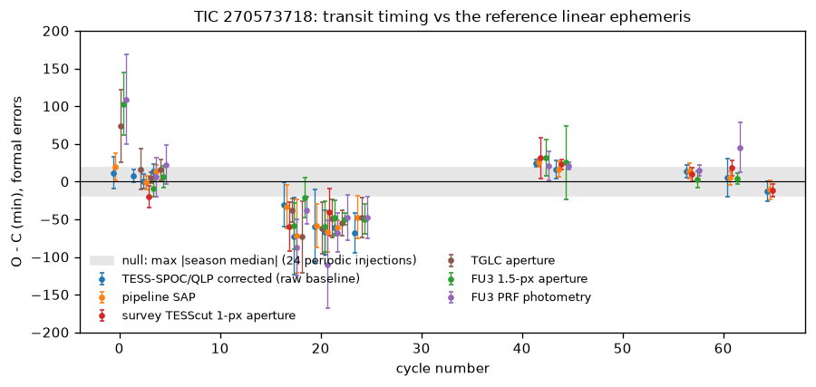
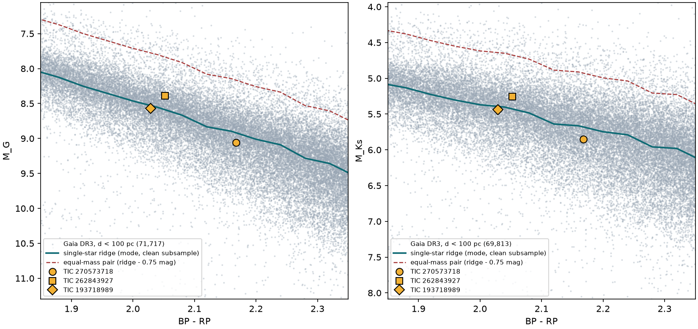
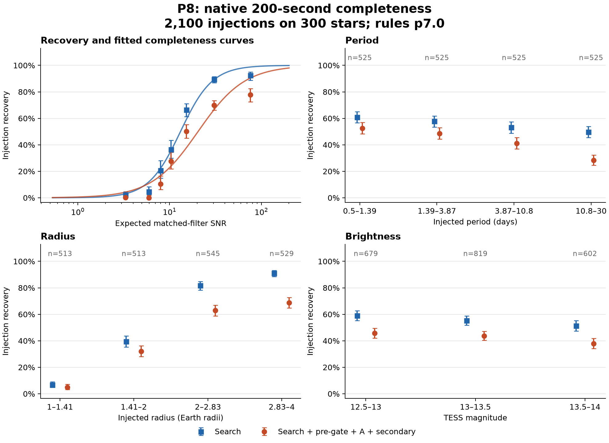

TESS full-frame images · M and K dwarfs · 2026
tesshunter
A calibrated search for small transiting planets around the coolest nearby stars, built as a pre-registered vetting funnel, and the deep archival follow-up of what survived it.
The funnel
In S1 batch 1: 2,000 stars → 4,655 pre-gate signals → 141 Stage A passes → 32 Stage C survivors → 23 SUBMIT/HOLD → follow-up. A replay of the search on 27 sign-inverted light curves, where any dip is noise, produced no Stage A pass.
New planet candidates
Candidates, not confirmed planets. First detected by this project on the dates shown; this page and the repository are their first public record.
| Star | Period (d) | T0 (BJD_TDB) | Depth (ppm) | ~Rp (R⊕) | Verdict | First detected | Notes |
|---|---|---|---|---|---|---|---|
| TIC 382098683 | 4.351685 | 2458329.13902 | 416 | 1.31 | SUBMIT | 2026-10-16 | 4.35 d, ~1.3 R⊕. Archival follow-up: reports/TESS_three_candidate_archival_constraints.pdf |
| TIC 188830138 | 1.181024 | 2458764.89089 | 347 | 1.43 | SUBMIT | 2026-10-16 | 1.18 d, ~1.4 R⊕. Archival follow-up: reports/TESS_three_candidate_archival_constraints.pdf |
| TIC 116046773 | 5.650272 | 2458987.88262 | 866 | 2.29 | SUBMIT | 2026-10-16 | 5.65 d, ~2.3 R⊕. Vetting: reports/TESS_batch1_deep_analysis.pdf, reports/TESS_seven_candidate_continuation.pdf |
| TIC 201247574 | 16.560576 | 2458333.60991 | 1,559 | 2.44 | HOLD | 2026-10-17 | 16.56 d, ~2.4 R⊕. Archival follow-up: reports/TESS_three_candidate_archival_constraints.pdf |
| TIC 262843927 | 24.108929 | 2458332.78771 | 1,245 | 1.99 | HOLD | 2026-10-17 | 24.11 d, ~2.0 R⊕. Deep follow-up (FU3): top tier; likely unresolved stellar companion; imaging is the next step |
| TIC 270573718 | 41.383701 | 2458334.90375 | 2,058 | 2.12 | HOLD | 2026-10-16 | 41.38 d, ~2.1 R⊕. Deep follow-up (FU3): second tier; season-level transit-timing offsets unresolved |
Other leads
| Star | Period (d) | T0 (BJD_TDB) | Depth (ppm) | ~Rp (R⊕) | Verdict | First detected | Notes |
|---|---|---|---|---|---|---|---|
| TIC 207432717 | 43.44458 | 2458767.3044 | 3,771 | 3.67 | HOLD | 2026-10-17 | 43.4 d, ~3.7 R⊕; only 4 events; FPP 8% (pipeline) |
| TIC 155949537 | 38.89178 | 2458958.84697 | 1,956 | 2.56 | HOLD | 2026-10-17 | 38.9 d, ~2.6 R⊕; only 3 events; FPP 0.9% (pipeline) |
| TIC 18229070 | 22.94881 | 2458996.75547 | 1,394 | 2.18 | HOLD | 2026-10-17 | 22.9 d, ~2.2 R⊕; strongest raw signal of the rest; pipeline scene used a wrong Gaia source (fixed ID bug); nearby-binary scenario open |
| TIC 9066956 | 0.71344765 | 2460182.82435 | 4,070 | 2.6-3.4 | SUBMIT | 2026-10-05 | Ultra-short period around an M dwarf; signal real and on target over 7 years; main loophole a diluted triple; one ground transit in r' decides it |
| TIC 332366289 | 18.748085 | 2459869.87007 | SUBMIT (P12) | 2026-10-01 | Weak: period ambiguous, localisation unresolved; needs new data |
Follow-up, in pictures




Method in one paragraph
TESS-SPOC and QLP light curves are stitched, detrended and searched with a per-star CPU budget. Every rule in the vetting funnel was written and frozen before the survey it judged, and every change was tested by injecting planets into real light curves and by checking that known planets survive. Survivors get an archival follow-up: re-reductions from the pixels, difference imaging calibrated with injections on the target and on each neighbour, ground-based photometry where it exists, radial-velocity mass limits from Gaia, and a replay of the discovery search to measure how easily noise passes the same gates.